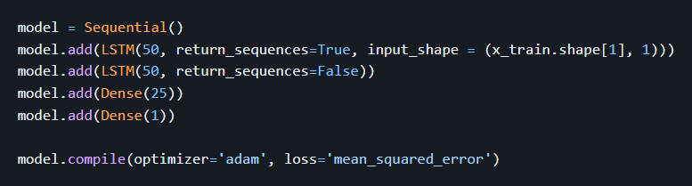

The idea of predicting the stock market is an intriguing one. A model
that could predict stock prices at a relatively high accuracy would
prove to be an incredible asset to anyone. While there is still
substantial risk and existing models are not to be fully relied upon,
many have already reaped the benefits of such technology. Almost all
major financial companies have adopted Machine Learning into their
equity investment decisons and have benefited strongly from them.
Several months ago, I decided to dive deeper into this topic and
create my own project / tool.
The project uses an artificial RNN called LSTM which stands for "Long
short-term memory". Sounds pretty contradictory no? Well, when you
look into the architecture of LSTM neural network, it kind of makes
sense. RNN's in general have long term and short term memory
abilities, and the name LSTM sort of plays off of this idea. LSTM
networks are special because they address the long-term dependency
problems true of typical RNNs. This Article from Towards Data Science
written by Rian Dolphin does a good job of describing LSTM neural
networks.
This project is fairly simple and pretty much follows the standard
procedure for an ML project. The data was retrieved from Yahoo and
visualized. We then built our LSTM model:

Finally, we training the model with our training data and compared it
to our test data for validation. Here's a visual of running the model
for AAPL stock prices between 2017 and 2021:
In addition to the data processing and model, I also created a simple
(admittedly kinda ugly) UI using PyQT. It takes in a start and end
date as well as a stock symbol and will run the model for those
parameters. You can watch the demo linked above.
Overall, this project was super interesting and it was able to teach
me how to use an LSTM RNN and prompted me to research the RNN further.
I was suprised at how easy it was to retreive data from Yahoo and how
clean the data was coming in. I plan to come back to this project to
optimize / fine-tune the model and clean up some of the mistakes and
sloppiness. My goal in the first iteration of this project was to
really just get my feet wet.